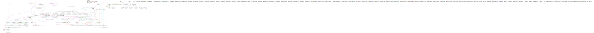
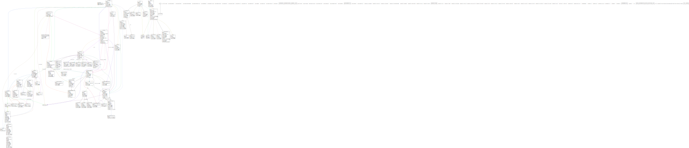
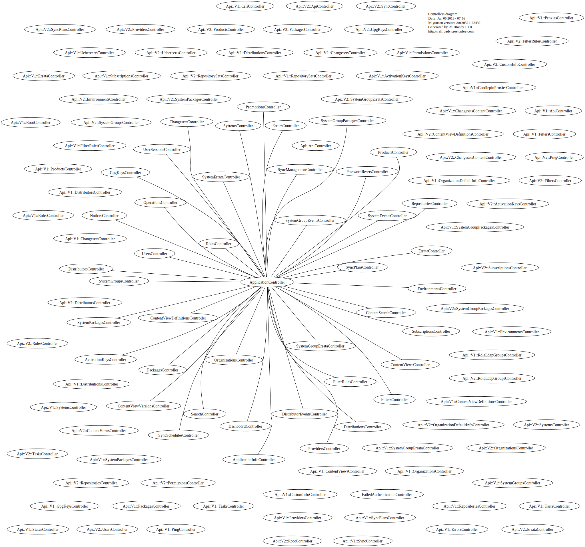
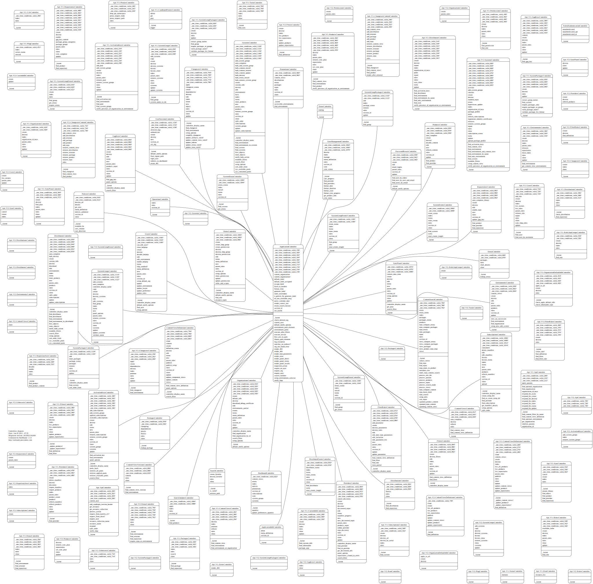

Graphs
Note: If you do not see any graph images please generate them, see bottom of this page.
Models brief

Models complete

Controllers brief

Controllers complete

How to generate and update these graphs
- enable
railroadygem inbundler.d/development.rb generate svg graphs
!!!txt bundle exec rake diagram:all
move them to graphs folder
!!!txt mv -f doc/*.svg doc/graphs